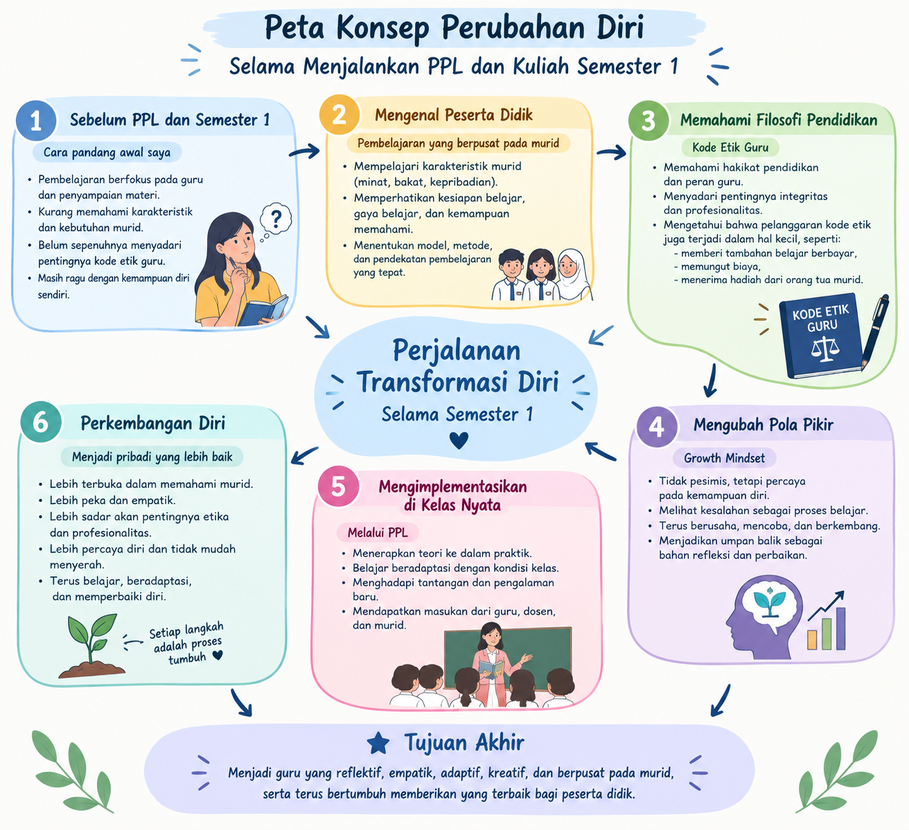
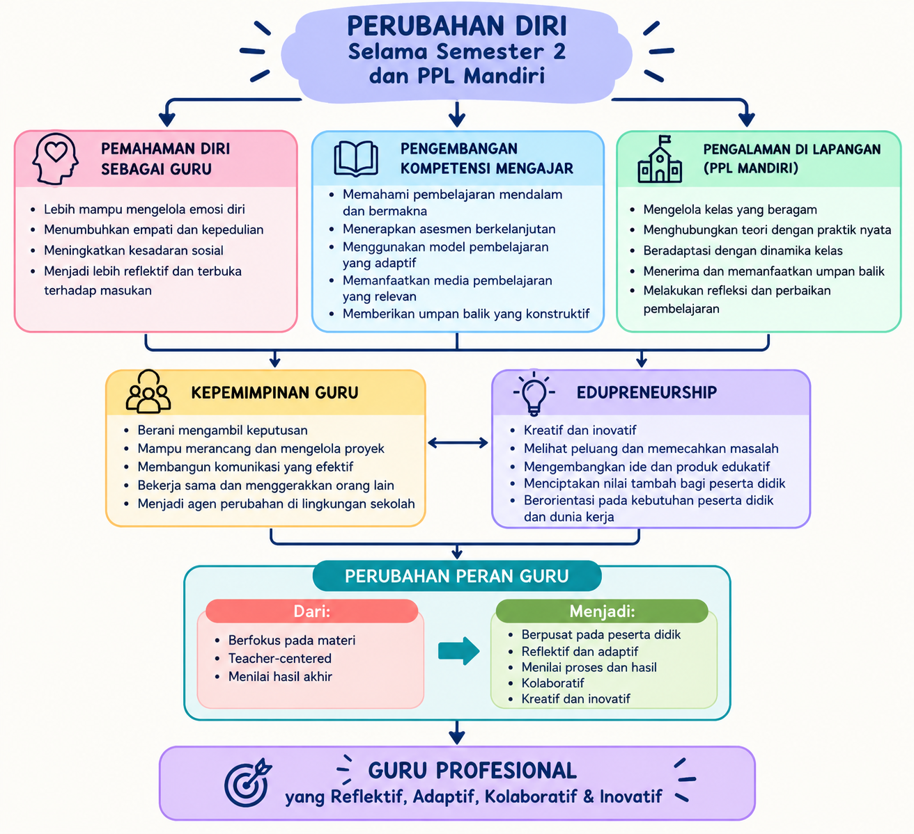

E-PORTOFOLIO SEMINAR PENDIDIKAN PROFESI GURU
Nasriani, S.Pd.
2590494950035
- Nama
- Nasriani, S.Pd.
- NIM
- 2590494950035
- Bidang Studi
- Kuliner
- Universitas
- Universitas Negeri Makassar
- Angkatan
- 2026
- Sekolah Mitra
- SMKN 6 Makassar
- Dosen Pembimbing
- Dr. Slamet Widodo, S.Pd., M.Kes.
- Guru Pamong
- Mardiana Mandeha, S.Pd.
Tentang Saya
Saya Nasriani, yang akrab disapa Ani, seorang perempuan yang lahir tepat pada Hari Radio beberapa tahun silam. Sebagai anak sulung dari tiga bersaudara, saya tumbuh dengan kecintaan pada membaca, mendaki, dan menjelajah alam. Rasa ingin tahu yang tinggi membuat saya selalu antusias mempelajari hal-hal baru. Semangat ini kian berkobar saat saya melangkah sebagai mahasiswa PPG Calon Guru.
Pengalaman mengabdi di sebuah SMKN di Kabupaten Bone menjadi titik balik yang berharga. Perjalanan tersebut terus mengingatkan saya pada sosok guru seperti apa saya di masa lalu, sekaligus menyadarkan bahwa masih banyak kekurangan yang harus saya benahi untuk menjadi pendidik yang lebih baik.
Jadilah berbeda untuk di kenang, karena berbeda itu indah.
Identifikasi Diri
Visi Pendidikan Indonesia
Mewujudkan pemerataan akses pendidikan di Indonesia, di mana setiap anak, baik yang berada di wilayah perkotaan maupun daerah terpencil, memperoleh kesempatan yang setara dalam mengakses pendidikan yang bermutu.
Visi Menjadi Guru
Pendidik yang mampu membangkitkan semangat belajar murid, sehingga mereka menikmati proses belajar, bukan sekadar menjalankannya sebagai kewajiban. Berkomitmen menumbuhkan keberanian dan rasa percaya diri murid untuk berani mencoba, berani bertanya, dan berani belajar dari kegagalan. Menciptakan kelas yang adil dan setara bagi semua murid, serta membangun kedekatan emosional yang membuat mereka merasa diterima apa adanya.
Strategi Pencapaian Visi
- Pembelajaran Berpusat pada Murid — Asesmen Diagnostik & Pembelajaran Berdiferensiasi: Memetakan minat, bakat, dan kesiapan vokasi murid sejak awal untuk mengarahkan jalur keahlian yang presisi sesuai potensi masing-masing.
- Inovasi Pembelajaran & Penyelarasan Kurikulum DUDI — Mengembangkan modul ajar interaktif berbasis software/alat standar industri serta memanfaatkan platform digital untuk menghadirkan pembelajaran yang kontekstual dan up-to-date.
Pengalaman Belajar
Perjalanan saya sebagai mahasiswa PPG Calon Guru merupakan proses yang membawa saya untuk terus belajar, memahami, mencoba, merefleksikan, dan berkembang. Setiap pengalaman yang saya lalui memberikan pemahaman baru tentang pendidikan dan perlahan membentuk cara pandang saya sebagai calon guru.
PERUBAHAN DALAM DIRI SAYA
- MemahamiMemahami hakikat pendidikan dan nilai yang harus dibangun.
- MengenalMemahami karakteristik, kebutuhan, dan potensi peserta didik.
- Memahami MasalahBelajar melihat kebutuhan dan menemukan solusi melalui Design Thinking.
- MerancangMenciptakan pembelajaran yang mendalam, bermakna, dan sesuai kebutuhan murid.
- MenerapkanMembawa pengetahuan dan rancangan ke dalam praktik melalui PPL.
- BertumbuhBelajar dari tantangan, kesalahan, pengalaman, dan umpan balik.
- MenjadiTerus berkembang menjadi guru yang reflektif, empatik, adaptif, kreatif, dan berpusat pada murid.
Refleksi Akhir
Ketika melihat kembali seluruh perjalanan belajar ini, saya menyadari bahwa setiap pengalaman memiliki keterkaitan. Filosofi Pendidikan membantu saya memahami mengapa pendidikan penting. Peserta Didik dan Pemahamannya mengajarkan saya siapa yang saya ajar. Design Thinking mengajarkan saya bagaimana memahami kebutuhan dan masalah sebelum menciptakan solusi. Pembelajaran Mendalam dan Asesmen membantu saya merancang pengalaman belajar yang bermakna. PPL Terbimbing memberikan kesempatan untuk menerapkannya dalam situasi nyata, sedangkan Pola Pikir Bertumbuh mengajarkan saya untuk terus belajar dari setiap proses.
Perjalanan ini mengubah cara saya memandang profesi guru. Saya semakin memahami bahwa guru bukan hanya seseorang yang menguasai materi dan berdiri di depan kelas, tetapi seorang pembelajar sepanjang hayat yang terus memahami murid, merancang pembelajaran, menerima umpan balik, dan melakukan perbaikan.
Sebagai calon guru Kuliner, saya ingin menghadirkan pembelajaran yang tidak hanya mengembangkan keterampilan, tetapi juga menumbuhkan kreativitas, tanggung jawab, kerja sama, kedisiplinan, dan kepercayaan diri peserta didik.
Perjalanan saya belum selesai.

My Growth Journey
Perjalanan Transformasi dan Perkembangan Diri Selama Semester 1
Semester pertama dalam Pendidikan Profesi Guru (PPG) menjadi perjalanan yang banyak mengubah cara pandang saya sebagai calon guru. Dari berbagai mata kuliah dan pengalaman PPL, Pemahaman Peserta Didik menjadi salah satu yang paling berkesan karena mengajarkan saya untuk melihat murid dari sudut pandang yang berbeda. Saya memahami bahwa setiap murid memiliki karakter, kebutuhan, kemampuan, dan kondisi yang berbeda. Perbedaan tersebut bukan alasan untuk membedakan perhatian, tetapi menjadi alasan bagi guru untuk lebih peka terhadap kebutuhan mereka. Saya semakin menyadari bahwa setiap murid memiliki hak yang sama untuk diperhatikan, mendapatkan ilmu, didukung untuk berkembang, dan merasa nyaman berada di kelas.
Jika kamu berhenti di kegagalanmu yang kedua, maka kamu tidak akan tahu bahwa kamu berhasil di percobaanmu yang ketiga.

My Growth Journey
Perjalanan Transformasi dan Perkembangan Diri Selama Semester 2
Pada semester 2, salah satu mata kuliah yang paling relevan dengan pengalaman saya selama melaksanakan PPL Mandiri adalah Pembelajaran Sosial Emosional (PSE). Relevansi tersebut semakin saya rasakan ketika saya mengajar di kelas XI Kuliner 1 yang di dalamnya terdapat beberapa murid berkebutuhan khusus. Pada awalnya, saya menyadari bahwa setiap murid memiliki cara belajar, kemampuan, dan respons yang berbeda terhadap pembelajaran. Ada murid yang dapat mengikuti instruksi dengan cepat, tetapi ada pula yang membutuhkan penjelasan berulang, pendampingan, atau waktu yang lebih panjang untuk menyelesaikan tugas. Pengalaman tersebut perlahan mengubah cara pandang saya sebagai calon guru. Saya belajar bahwa memberikan perlakuan yang sama kepada semua murid tidak selalu berarti memberikan pembelajaran dengan cara yang sama. Justru, keadilan dalam pembelajaran adalah ketika setiap murid mendapatkan kesempatan dan dukungan yang sesuai dengan kebutuhannya untuk dapat berkembang. Di sinilah saya merasakan bahwa PSE bukan hanya teori yang dipelajari di bangku perkuliahan, tetapi sesuatu yang benar-benar saya butuhkan ketika berhadapan dengan murid secara langsung.
Menjadi guru bukan hanya tentang memahami apa yang harus diajarkan, tetapi juga memahami siapa yang sedang kita ajar. Karena setiap siswa datang ke kelas dengan kemampuan, kebutuhan, emosi, dan cerita yang berbeda.
Video 1 — Praktik Mengajar
Video 2 — Refleksi Belajar
Aplikasi 3D Kitchen merupakan karya inovatif berupa media ajar interaktif yang dirancang untuk memberikan pengalaman visual secara langsung. Anda dapat mengeksplorasi dan berinteraksi dengan demo aplikasi di bawah ini.
Refleksi Mata Kuliah Semester 1
Model refleksi 4C (Connection, Challenge, Concept, Change) pada setiap mata kuliah.
Filosofi Pendidikan dan Pendidikan Nilai
Mempelajari landasan filosofis pendidikan serta penanaman nilai dalam praktik mengajar.
Pemahaman Peserta Didik dan Pembelajarannya
Memahami karakteristik, kebutuhan, dan potensi peserta didik untuk merancang pembelajaran yang berpihak pada murid.
Pembelajaran Mendalam dan Asesmen Dasar
Menerapkan pembelajaran mendalam serta asesmen awal untuk mendorong pemahaman peserta didik.
Design Thinking
Menerapkan pendekatan design thinking untuk memecahkan masalah pendidikan secara kreatif dan berpusat pada murid.
Pola Pikir Bertumbuh (Growth Mindset)
Mengembangkan pola pikir berkembang dalam konteks pendidikan dan pembelajaran.
Praktik Pengalaman Lapangan Terbimbing
Praktik mengajar terbimbing di sekolah di bawah supervisi guru pamong dan dosen pembimbing.
Refleksi Mata Kuliah Semester 2
Model refleksi 4C (Connection, Challenge, Concept, Change) pada setiap mata kuliah.
Pembelajaran Sosial dan Emosional
Mempelajari kompetensi sosial emosional untuk menciptakan lingkungan belajar yang aman, nyaman, dan berpihak pada murid.
Pembelajaran Mendalam dan Asesmen Lanjut
Mendalami pembelajaran terdiferensiasi serta asesmen lanjutan untuk memberikan umpan balik yang membangun bagi murid.
Proyek Kepemimpinan
Merancang dan melaksanakan proyek kepemimpinan sebagai upaya pengembangan diri dan lingkungan sekolah secara berkelanjutan.
Edupreneurship
Menumbuhkan jiwa kewirausahaan, kreativitas, dan kemandirian dalam menciptakan inovasi pembelajaran yang bernilai.
Praktik Pengalaman Lapangan Mandiri
Menjalankan praktik mengajar secara mandiri dengan menerapkan seluruh pembelajaran untuk menciptakan kelas yang bermakna.
Apa yang Berhasil
Selama dua semester menjalani PPG, saya berhasil mengubah cara pandang saya sebagai calon guru. Pada semester pertama saya belajar untuk melihat murid sebagai individu yang berbeda-beda, sedangkan pada semester kedua saya belajar bahwa keberhasilan pembelajaran tidak hanya diukur dari kemampuan murid, tetapi juga dari kondisi sosial dan emosionalnya. Melalui PPL dan PPL Mandiri di SMK Negeri 6 Makassar, saya berhasil menerapkan pembelajaran berdiferensiasi, pembelajaran sosial emosional, serta proyek kreasi yang membuat murid lebih aktif, berani mencoba, dan merasa dihargai.
Apa yang Perlu Diperbaiki
Pengelolaan waktu pada kegiatan inti masih perlu saya strukturnkan agar seluruh tahapan dapat tercapai secara optimal. Selain itu, saya masih cenderung terburu-buru memberikan penilaian ketika peserta didik belum memahami materi. Saya juga perlu meningkatkan kemampuan dalam membaca kebutuhan murid secara individual agar pembelajaran berdiferensiasi dapat diterapkan secara lebih tepat.
Pengalaman Terbaik
Momen ketika peserta didik yang awalnya pasif dan ragu, akhirnya berani maju dan mempresentasikan hasil karyanya di depan kelas. Pada saat itu saya menyadari bahwa kepercayaan diri yang saya bangun melalui dukungan, apresiasi, dan kesempatan yang berulang benar-benar memberi dampak besar bagi murid.
Rencana Pengembangan Diri
Saya berencana untuk memperdalam kompetensi asesmen digital, Pendidikan Bahasa Indonesia, serta manajemen kelas, sekaligus membiasakan diri melakukan refleksi setelah setiap pertemuan. Saya juga ingin mengikuti pelatihan pembelajaran berbasis proyek agar dapat terus membuat karya yang bermanfaat bagi peserta didik.
Bagian ini menampilkan dokumentasi kegiatan selama program PPG, mulai dari pembelajaran di kelas hingga praktik mengajar di sekolah.